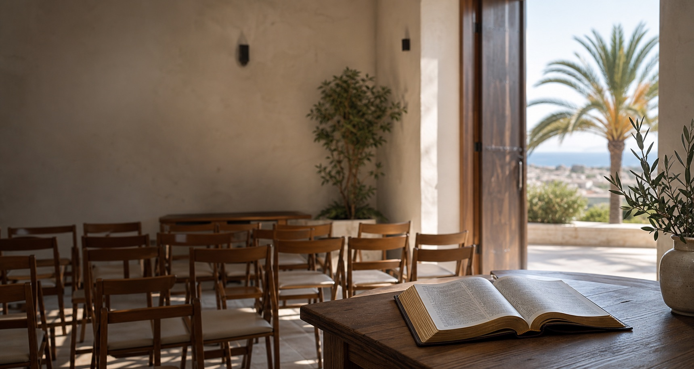
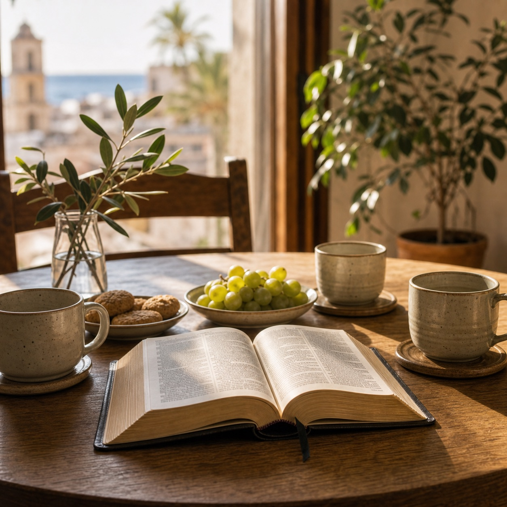
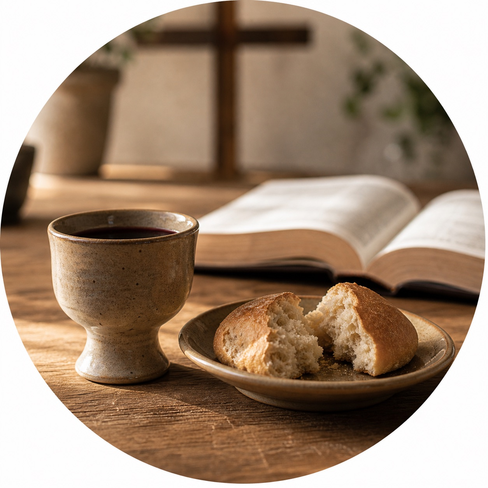
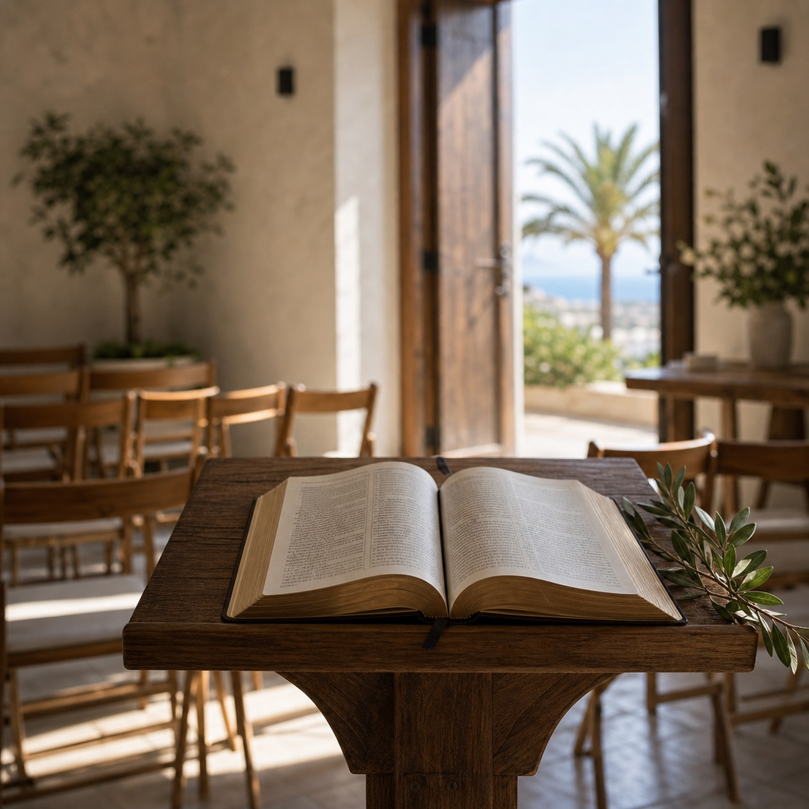

主日敬拜与主日学。每月第一个主日 10:00 掰饼圣礼。

Ctra. de la Azucarera Intelhorce, 56, 29004 Málaga
敬拜、分享、祷告和团契生活，彼此扶持同行。
About
一个在马拉加相遇、敬拜和成长的家
我们相信教会不只是一个聚会地点，更是一群人在基督里彼此认识、彼此守望、彼此鼓励的属灵家庭。
无论你是刚来到马拉加、正在寻找华人教会，还是想更多了解基督信仰，都欢迎你和我们联系。
Gatherings
聚会与团契

主日崇拜
每周日 上午 10:00-11:30，主日敬拜与主日学。

团契生活
在日常生活中彼此关心，也陪伴新朋友慢慢融入。

掰饼圣礼
每月第一个主日上午 10:00 举行掰饼圣礼。
Weekly Schedule
周间聚会安排
周一晚上
新堂祷告会：22:00-23:00
周四早上
老堂祷告会：9:30-10:30
周四晚上
叶大伟弟兄 & 许摩西长老：22:00-23:00
周五早上
周建胜弟兄 & 陈永胜执事：9:30-10:30
周五晚上
林雪平执事：19:00-20:30
每月第一周周五晚上
王小慧姐妹 & 林冬梅执事：21:00-23:00
“你们是世上的光。城造在山上是不能隐藏的。”
马太福音 5:14Notice
免责声明
中文
本网页并非马拉加华人基督教会的官方网站，而是由热心网友自发创建并维护，仅为方便公众查阅相关公开信息。网页内容如有遗漏、变更或不准确之处，请以教会实际发布或确认的信息为准。
English
This website is not the official website of Malaga Chinese Christian Church. It has been created and is maintained voluntarily by a community member to help the public access relevant information. In the event of any omission, change, or inaccuracy, please refer to information confirmed or published directly by the church.
Español
Este sitio web no es el sitio oficial de la Iglesia Cristiana China de Málaga. Ha sido creado y es mantenido de forma voluntaria por un miembro de la comunidad, con el único fin de facilitar al público el acceso a información relevante. En caso de omisiones, cambios o inexactitudes, prevalecerá la información confirmada o publicada directamente por la iglesia.
Contact
欢迎和我们联系
如果你想来参加聚会，或有信仰、祷告、交通方面的需要，可以电话联系教会联络人。
以下邮箱为热心网友维护邮箱，不代表教会官方联系方式。
xannig1990@gmail.com 发送邮件给维护者